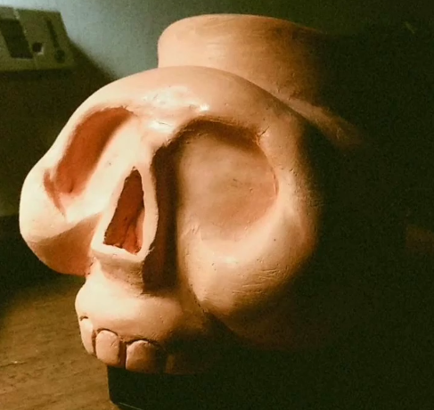

Gerardo Arcos
Mi Statement
Soy Gerardo Arcos, un artista multidiciplinario apasionado por generar espacios que saquen a las personas de su cotidianidad y las inviten a reflexionar. A través de técnicas plásticas como la pintura y la escultura, así como del modelado 3D y la animación, busco explorar las fronteras entre lo físico y lo virtual.
Mi práctica artística se caracteriza por la experimentación constante.
En mi proceso creativo, me sumerjo en la experimentación, permitiendo que las ideas y conceptos se desarrollen de forma orgánica. Me impulsa la necesidad de generar un impacto emocional en el espectador, de provocar preguntas y abrir espacios para la reflexión. A través de mis obras, busco crear una conexión íntima con quienes las observan, invitándolos a explorar nuevas perspectivas y cuestionar su realidad.
En el futuro, aspiro a seguir expandiendo mi práctica artística, explorando nuevas tecnologías y medios que me permitan ampliar los límites de mi expresión creativa. Mi objetivo es contribuir al diálogo artístico y social, generando obras que provoquen cambios y promuevan la reflexión en nuestra sociedad.
Obras
La chica de los Marlboro Rojo
2021
20×20 cm
Acrílico sobre lienzo
Xoxotlani
2020
25x35 cm
Acrílico sobre lienzo
La Flaca
2020
25x35 cm
Acrílico sobre lienzo
Floreciendo
2020
20×20 cm
Acrílico sobre lienzo
Cecaelia
2022
25x35 cm
Acuarela sobre papel
Resistance is Not Futile
2022
25x17 cm
Gis pastel sobre papel
Emilia
2022
25x17 cm
Carboncillo sobre papel
Maylen
2022
25x17 cm
Carboncillo sobre papel
Frida
2022
25x17 cm
Carboncillo sobre papel

Sin Nombre
2022
25x17 cm
Carboncillo sobre papel
Edad
2024
25x17 cm
Acuarela sobre papel

Bruja
2024
25x17 cm
Acuarela sobre papel
Redes